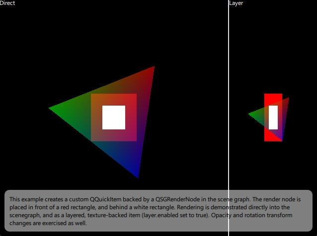

Scene Graph - Custom QSGRenderNode
Shows how to use QSGRenderNode to implement custom rendering in the Qt Quick scenegraph.
The custom render node example shows how to implement a QQuickItem subclass that is backed by a scene graph node derived from QSGRenderNode, providing it's own QRhi-based rendering.

Note: This example demonstrates advanced, low-level functionality performing portable, cross-platform 3D rendering, while relying on APIs with limited compatibility guarantee from the Qt Gui module. To be able to use the QRhi APIs, the application links to Qt::GuiPrivate and includes <rhi/qrhi.h>.
QSGRenderNode allows direct access to the Render Hardware Interface (RHI) within the scenegraph. This example demonstrates how to create QSGRenderNode based render node and manage it with a custom item. The render node creates an RHI pipeline, updates vertex and uniform buffers, and renders into the RHI command buffer.
In practice this is a portable, cross-platform approach to perform custom rendering inline with the scenegraph's own rendering, without resorting to a native 3D API such as OpenGL, Metal, or Vulkan. Rather, the application uses Qt's graphics and shader abstraction layer.
QSGRenderNode is the enabler for one of the three ways to integrate custom 2D/3D rendering into a Qt Quick scene. The other two options are to perform the rendering before or after the Qt Quick scene's own rendering, or to generate a whole separate render pass targeting a dedicated render target (a texture) and then have an item in the scene display the texture. The QSGRenderNode-based approach is similar to the former, in the sense that no additional render passes or render targets are involved, and allows injecting custom rendering commands "inline" with the Qt Quick scene's own rendering.
Refer to the following examples for these three approaches:
- Scene Graph - RHI Under QML - Demonstrates an "underlay" approach based on the QQuickWindow::beforeRendering() signal. No additional render pass and resources are needed, but composition and blending with the rest of the Qt Quick scene is quite limited. Rendering "under" or "over" the Qt Quick scene is the simplest approach.
- Scene Graph - RHI Texture Item - Demonstrates creating a custom QQuickItem that renders into a texture and displays a quad textured with the generated content. This is very flexible and allows complete blending and composition of the resulting 2D image with the rest of the Qt Quick scene. That comes at the expense of an additional render pass and render target.
- This example - Demonstrates the "inline" approach, where the Qt Quick scene graph calls into the custom item and node implementation during the main render pass. This approach can be great for performance (no extra render passes, texturing, and blending are involved), but has potential pitfalls and is the most complicated method.
The custom item derives from QQuickItem. Most importantly, it reimplements updatePaintNode().
class CustomRender : public QQuickItem { Q_OBJECT Q_PROPERTY(QList<QVector2D> vertices READ vertices WRITE setVertices NOTIFY verticesChanged) QML_ELEMENT public: explicit CustomRender(QQuickItem *parent = nullptr); QList<QVector2D> vertices() const; void setVertices(const QList<QVector2D> &newVertices); signals: void verticesChanged(); protected: QSGNode *updatePaintNode(QSGNode *old, UpdatePaintNodeData *) override; private: QList<QVector2D> m_vertices; };
The constructor sets the ItemHasContents flag to indicate that this is a visual item.
CustomRender::CustomRender(QQuickItem *parent) : QQuickItem(parent) { setFlag(ItemHasContents, true); connect(this, &CustomRender::verticesChanged, this, &CustomRender::update); }
The updatePaintNode() implementation creates an instance of the custom scenegraph node, if not yet done. The backing QSGNode tree for this item consists of a single node, an instance of a QSGRenderNode-derived class. When Qt Quick's threaded rendering model is in use, this function is called on the render thread with the main thread blocked. That is why it is safe to access main thread data (such as data stored in QQuickItems). The node, the instance of the QSGRenderNode subclass, is going to "live on" the render thread.
QSGNode *CustomRender::updatePaintNode(QSGNode *old, UpdatePaintNodeData *) { CustomRenderNode *node = static_cast<CustomRenderNode *>(old); if (!node) node = new CustomRenderNode(window()); node->setVertices(m_vertices); return node; }
The CustomRenderNode class derives from QSGRenderNode, reimplementing a number of virtual functions. To manage QRhi resources (buffers, pipelines, etc.), smart pointers are quite useful in this case, because the node is destroyed by the scene graph together with the rest of the scene on the render thread (if there is one) while the QRhi is still available, and therefore releasing resources from the destructor or via smart pointers is legal and safe.
class CustomRenderNode : public QSGRenderNode { public: CustomRenderNode(QQuickWindow *window); void setVertices(const QList<QVector2D> &vertices); void prepare() override; void render(const RenderState *state) override; void releaseResources() override; RenderingFlags flags() const override; QSGRenderNode::StateFlags changedStates() const override; protected: QQuickWindow *m_window; std::unique_ptr<QRhiBuffer> m_vertexBuffer; std::unique_ptr<QRhiBuffer> m_uniformBuffer; std::unique_ptr<QRhiShaderResourceBindings> m_resourceBindings; std::unique_ptr<QRhiGraphicsPipeline> m_pipeline; QList<QRhiShaderStage> m_shaders; bool m_verticesDirty = true; QList<QVector2D> m_vertices; };
Well-behaving QSGRenderNode subclasses also reimplement releaseResources(), which in this case can be a simple set of reset() calls.
void CustomRenderNode::releaseResources() { m_vertexBuffer.reset(); m_uniformBuffer.reset(); m_pipeline.reset(); m_resourceBindings.reset(); }
This QSGRenderNode is performing its rendering through the QRhi APIs (and not directly through OpenGL, Vulkan, Metal, etc.), and it takes the item transform into account (as it only really does 2D rendering). Hence specifying the appropriate flags, which may bring a small performance improvement.
QSGRenderNode::RenderingFlags CustomRenderNode::flags() const { // We are rendering 2D content directly into the scene graph using QRhi, no // direct usage of a 3D API. Hence NoExternalRendering. This is a minor // optimization. // Additionally, the node takes the item transform into account by relying // on projectionMatrix() and matrix() (see prepare()) and never rendering at // other Z coordinates. Hence DepthAwareRendering. This is a potentially // bigger optimization. return QSGRenderNode::NoExternalRendering | QSGRenderNode::DepthAwareRendering; }
The prepare() and render() functions are called every time the Qt Quick scene renders. The first is called when preparing (but not yet recording) the render pass. This typically creates resources, such as buffers, textures, and graphics pipelines, if not yet done, and enqueues uploading data to them.
void CustomRenderNode::prepare() { QRhi *rhi = m_window->rhi(); QRhiResourceUpdateBatch *resourceUpdates = rhi->nextResourceUpdateBatch(); if (m_verticesDirty) { m_vertexBuffer.reset(); m_verticesDirty = false; } if (!m_vertexBuffer) { m_vertexBuffer.reset(rhi->newBuffer(QRhiBuffer::Immutable, QRhiBuffer::VertexBuffer, m_vertices.count() * sizeof(QVector2D))); m_vertexBuffer->create(); resourceUpdates->uploadStaticBuffer(m_vertexBuffer.get(), m_vertices.constData()); }
The render() function is called while the recording of a render pass, targeting either the QQuickWindow's swapchain, or a texture (in case of layered items, or when within a ShaderEffectSource), is active.
void CustomRenderNode::render(const RenderState *) { QRhiCommandBuffer *cb = commandBuffer(); cb->setGraphicsPipeline(m_pipeline.get()); QSize renderTargetSize = renderTarget()->pixelSize(); cb->setViewport(QRhiViewport(0, 0, renderTargetSize.width(), renderTargetSize.height())); cb->setShaderResources(); QRhiCommandBuffer::VertexInput vertexBindings[] = { { m_vertexBuffer.get(), 0 } }; cb->setVertexInput(0, 1, vertexBindings); cb->draw(m_vertices.count()); }
See also QSGRenderNode, QRhi, Scene Graph - RHI Under QML, Scene Graph - RHI Texture Item, and Qt Quick Scene Graph.